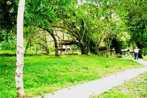
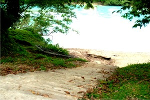
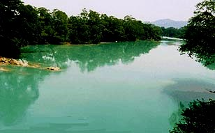
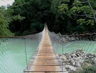

Ubicado en las instalaciones de una finca ganadera, estratégicamente en las riberas de los ríos Agua Clara y Tulijá, con dos pequeñas pero interesantes formaciones montañosas, entrelazadas con un puente colgante de 80 metros de longitud.
Se localiza hacia el Suroeste de la Ciudad de Palenque, vía carretera federal 199 Palenque-Ocosingo, en el kilómetro 46 se toma el desvío de 2 kilómetros que conducen a la localidad de Agua Clara.
Se puede llegar tomando la carretera federal No. 199, vía Palenque - San Cristóbal de Las Casas. Al llegar al kilómetro 58 hay un desvió de 2 kilómetros de terracería. Tomar este desvío que nos llevará directamente al centro eco turístico Agua Clara.
En Agua Clara puede participar y disfrutar de varias actividades como:
* Natación, Canotaje
* Paseos a caballo, recorridos en Kayaks
* Caminatas e investigaciones sobre los recursos biológicos
* Caminatas, Montañismo
* Senderismo y fotografía




Posicione el mouse o de click sobre las Imágenes.
{kind=link}
{kind=link}
{kind=link}
{kind=link}